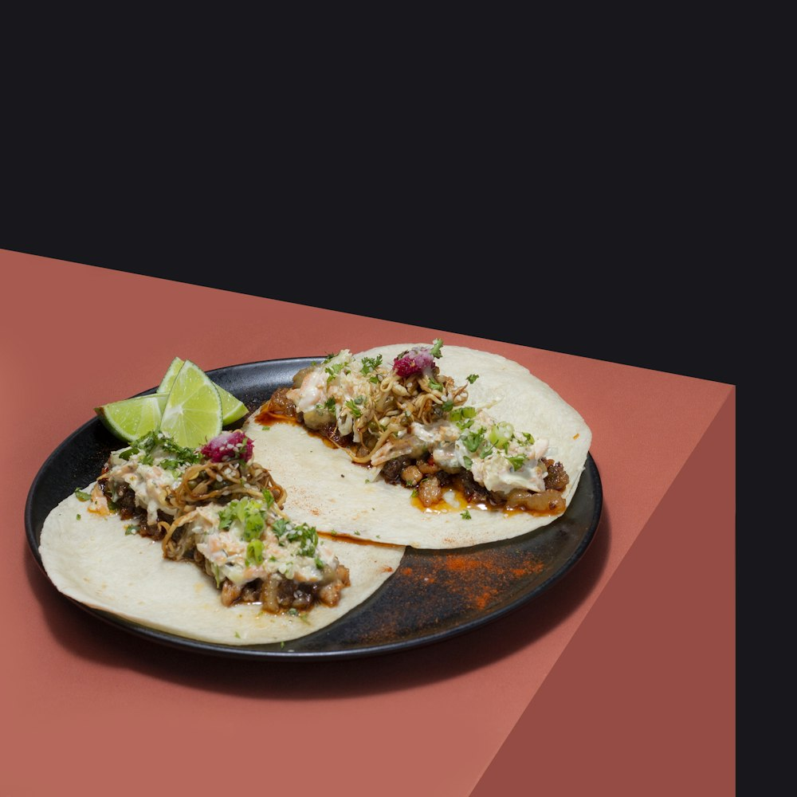

La favorita de la semana
Tacos de pollo al limón
Jugosos, frescos y listos en media hora. Perfectos para una cena entre amigos.
- 🔪 Preparación: 10 min
- Cocción: 20 min
- Dificultad: Fácil
Porciones (personas):